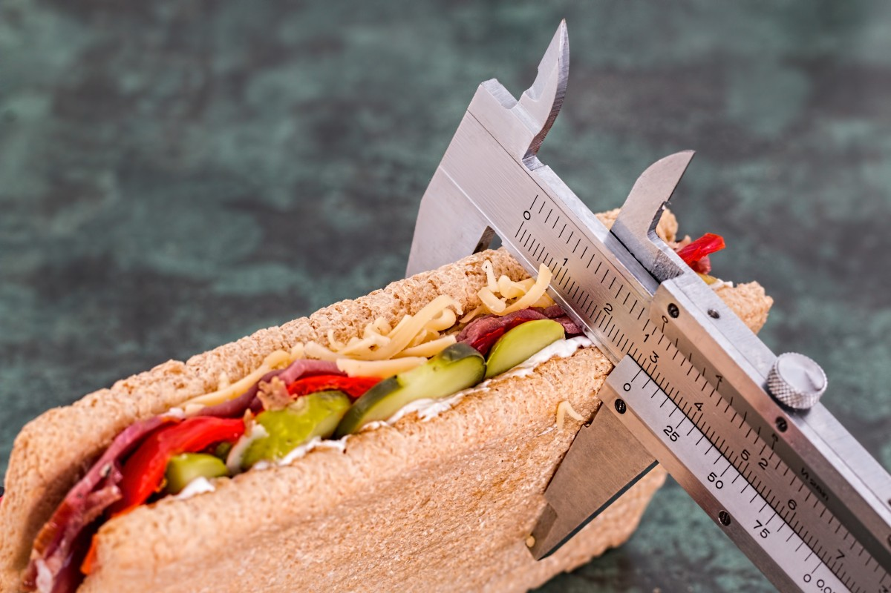

Spaghetti de Verduras
31 de Marzo del 2019
Este plato es perfecto para una dieta equilibrada, comer y hasta cenar rico. No estamos hablando de simplemente hacer una pasta hecha a base de verduras, déjame decirte algo... ni siquiera es pasta...
Preparación
Para hacer espaguetis o tallarines de verduras necesitamos un rallador especial o espiralizador, que es un utensilio con distinta cuchillas para cortar (como si fuera un sacapuntas) las verduras en forma de espiral. Suelen tener cuchillas para hacer espaguetis (cintas de unos 3 mm.), para hacer tallarines planos (6 mm.) y para hacer cintas más gruesas.
- Lavar bien todas las verduras. Pelar las cebollas y la zanahoria y cortarlas en julianas con los pimientos. Trocear el ajo en dados pequeños.
- Poner a calentar una sartén con un chorro de aceite de oliva. Cocinar las cebollas hasta que se transparenten. Agregar el ajo y después los pimientos y la zanahoria.
- Lavar el calabacín y cortar en rodajas. Cortar esas rodajas en cuatro partes para que queden triángulos. Añadir a la sartén.
- Agregar sal, pimienta, las hojas de albahaca y el orégano en polvo.
- Retirar las semillas del tomate y cortar en julianas. Cuando las verduras estén un poco hechas, agregar las tiras de tomate. Tapar.
- Poner a calentar una cacerola con agua. Cuando rompa el primer hervor, echar dentro los espaguetis. Esperar entre cinco y ocho minutos o hasta que estén al dente y colar.
- Añadir la pasta a la sartén, rehogar unos instantes con las verduras y servir con queso rallado por encima.
¿Contar calorías es bueno?
25 de Marzo del 2019
¿Qué son las calorías? ¿Por qué hay que contarlas? Parece que es un tema que últimamente ha tomado mucha fuerza, pero es algo que siempre ha existido.
Conocer las calorías que se consumen en el día, es fundamental para mantener un cuerpo saludable y si existen ciertas metas en cuanto niveles de grasa y peso.
Si bien, es cierto que las dietas ayudan a mejorar, la mejor manera de tener un control es conocer cuantas calorías ingieres y debes ingerir en todo el día. Con esto no solo me refiero a las personas que buscan bajar de peso, es muy útil para aumentar peso, masa y grasa.